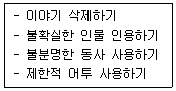
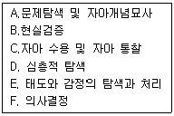
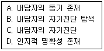
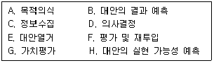
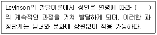
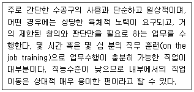
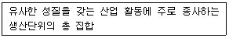
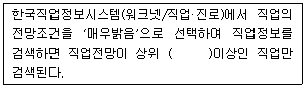
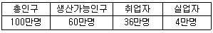

직업상담사-2급 (2012-05-20 기출문제)
1과목: 직업상담학
1. 낮은 동기를 갖고 있는 내담자의 자기효능감을 증진 시키기 위한 방법이 아닌 것은?
- 내담자의 장점을 강조하며 격려하기
- 긍정적인 단계를 강화하기
- 내담자와 비슷한 인물이나 관련자료 보여주기
- 직업대안 규명하기
(정답률: 84%)

2. Williamson이 제시한 상담단계에서 활용할 수 있는 상담기술이 아닌 것은?
- 촉진적 관계형성
- 직업에 대한 이해
- 행동계획의 권고와 설계
- 계획의 수행
(정답률: 42%)
3. 집단직업상담에 관한 설명으로 틀린 것은?
- Butcher는 집단직업상담의 3단계로 탐색단계, 전환단계, 행동단계를 제시하였다.
- 집단직업상담은 직업성숙도가 높은 사람들에게 더 효과적인 경향이 있다.
- 집단직업상담에서 각 구성원들은 상담과정에서 이루어진 토의 내용에 대해 비밀을 유지해야 한다.
- 남성과 여성은 집단직업상담에 임할 때 목표가 서로 다를 수 있으므로 성별을 고려해야 한다.
(정답률: 80%)
4. 직업상담의 문제유형에 관한 Crites의 분류에 해당하지 않는 것은?
- 현실형
- 다재다능형
- 적응형
- 불충족형
(정답률: 65%)
5. 인지치료에서 다루는 인지적 오류와 그 예를 바르게 짝지은 것은?
- 선택적 추론 – 90%의 성공도 나에게는 실패
- 양분법적 논리 – 지례 짐작하기
- 과일반화 – 영어시험을 망쳤으니 이번 시험은 완전히 망칠거야
- 과소평가 – 요리도 못하니 난 엄마로서 자격이 없어
(정답률: 82%)
6. Bordin의 정신역동적 직업상담 모형에서 제시한 진단분류가 아닌 것은?
- 자아갈등
- 직업선택에 대한 불안
- 의존성
- 비현실성
(정답률: 74%)
7. 정신분석적 상담에서 내담자의 갈등과 방어를 탐색하고 이를 해석해 나가는 과정은?
- 논박
- 훈습
- 통찰
- 조정
(정답률: 79%)
8. 경력 상담시 내담자의 가족이나 선조들의 직업 특징에 대한 시각적 표상을 얻기 위해 도표를 만드는 방식은?
- 경력개발 프로그램
- 제노그램
- 경력 사다리
- 직업결정 나무
(정답률: 89%)
9. 생애진로사정에 관한 설명으로 틀린 것은?
- 상담사와 내담자가 처음 만났을 때 이용할 수 있는 구조화된 면접기법으로 인쇄물이나 지필도구를 활용하면서 진행한다.
- Adler의 개인차 심리학에 기초하여 내담자와 환경과의 관계를 이해하는 데 도움을 주는 면접기법이다.
- 비판단적, 비위협적이고 대화적인 분위기로 전개되어 내담자와 긍정적인 관계를 형성하는데 도움이 된다.
- 생애진로사정에서는 작업자, 학습자, 개인의 역할 등을 포함한 다양한 생애역할에 대한 정보를 탐색해간다.
(정답률: 72%)
10. Parsons가 제안한 특성-요인이론의 3가지 요소에 포함되지 않는 것은?
- 내담자 특성의 객관적인 분석
- 직업세계의 분석
- 과학적 조언을 통한 매칭(Matching)
- 주변 환경의 분석
(정답률: 63%)
11. 내담자 중심의 상담과정에서 직업정보 제공시의 유의사항으로 틀린 것은?
- 내담자 스스로 얻도록 격려한다.
- 내담자의 입장에서 필요할 때 제공되어야 한다.
- 직업과 일에 대한 내담자의 감정과 태도가 자유롭게 표현되어야 한다.
- 내담자에게 직접적인 영향을 주거나 조작을 위하여 사용되어야 한다.
(정답률: 80%)
12. 직업상담사의 윤리에 관한 설명으로 옳은 것은?
- 직업상담사는 내담자 개인 및 사회에 임박한 위험이 있다고 판단되더라도 개인정보와 상담내용에 대한 비밀을 유지해야 한다.
- 직업상담사는 자신이 실제로 갖추고 있는 자격 및 경험의 수준을 벗어나는 인상을 주어서는 안된다.
- 직업상담은 심층적인 심리상담이 아니므로 비밀 유지 의무가 없다
- 직업상담사는 내담자가 상담을 통해 도움을 받지 못하더라도 먼저 종결하려고 해서는 안 된다.
(정답률: 76%)
13. 행동주의 직업상담 기법 중 새로운 학습을 돕는 학습촉진기법에 해당하지 않는 것은?
- 강화
- 금지조건형성
- 대리학습
- 변별학습
(정답률: 74%)
14. 내담자의 정보를 수집하고 행동을 이해하고 해석하는 데 사용되는 상담기법 중 다음의 경우는 어떤 기법을 사용해야 되는가?

- 전이된 오류 정정하기
- 불확실한 인물 인용하기
- 왜곡된 사고 확인하기
- 저항감 재인식하기
(정답률: 76%)
15. Super가 제시한 발달적 직업상담 단계를 바르게 나열한 것은?

- A → B → C → D → E → F
- A → D → C → B → E → F
- A → C → B → D → E → F
- A → B → D → C → E → F
(정답률: 83%)
16. 포괄적 직업상담 프로그램의 문제점에 해당하는 것은?
- 직업결정 문제의 원인으로 불안에 대한 이해와 불안을 규명하는 방법이 결여되어 있다.
- 직업상담의 문제 중 진학상담과 취업상담에 적합할 뿐 취업 후 직업적응 문제들을 깊이 있게 다루지 못하고 있다.
- 직업선택에 미치는 내적 요인의 영향을 지나치게 강조한 나머지 외적 요인의 영향에 대해서는 충분하게 고려하고 있지 못하다.
- 직업상담사 교훈적 역할이나 내담자의 자아를 명료화하고 자아실현을 시킬 수 있는 적극적 태도를 취하지 않는다면 내담자에게 직업에 대한 정보를 효과적으로 알려줄 수 없다.
(정답률: 80%)
17. 행동치료에서 문제행동에 대한 대안행동이 거의 없거나 효과적인 강화인자가 없을 때 유용한 기법으로서 파괴적이고 폭력적인 행동을 치료하는데 효과적인 것은?
- 과잉교정
- 모델링
- 반응가
- 자기지시기법
(정답률: 82%)
18. 내담자의 동기와 역할을 사정(Assessment)하는 데 가장 많이 사용되는 방법은?
- 개인상담
- 직업상담
- 자기보고
- 심리치료
(정답률: 72%)
19. 진로상담의 주요 원리가 아닌 것은?
- 진로상담은 진학과 직업선택에 초점을 맞추어 전개되어야 한다.
- 진로상담은 상담자와 내담자 간의 라포(Rapport)가 형성된 관계 속에서 이루어져야 한다.
- 진로상담은 항상 집단적인 진단과 처지의 자세를 견지한다.
- 진로상담은 상담윤리강령에 따라 전개되어야 한다.
(정답률: 85%)
20. 직업상담에서 이루어지는 일반적인 상담과정의 사정단계를 바르게 나열한 것은?

- A → C → B → D
- C → B → D → A
- B → A → D → C
- D → A → C → B
(정답률: 67%)
2과목: 직업심리학
21. 직무분석에 관한 설명으로 옳은 것은?
- 직무 관련 정보를 수집하는 절차이다.
- 직무의 내용과 성질을 고려하여 직무들 간의 상대적 가치를 결정하는 절차이다.
- 작업자의 직무수행 수준을 평가하는 절차이다.
- 작업자의 직무기술과 지식을 개선하는 공식적 절차이다.
(정답률: 63%)
22. 성격 5요인 검사(Big-5)의 하위요인에 해당하지 않는 것은?
- 성실성
- 정서적 개방성
- 외향성
- 호감성
(정답률: 64%)
23. 승진을 하려면 지방근무를 해야만 하고, 서울근무를 계속하려면 승진기회를 잃는 경우에 겪는 갈등의 유형은?
- 접근-접근 갈등
- 회피-회피 갈등
- 접근-회피 갈등
- 이중 접근 갈등
(정답률: 81%)
24. 직장인들이 스트레스를 경험할 때 나타나는 반응의 단계를 옳게 나열한 것은?
- 소진단계 → 저항단계 → 경고단계
- 저항단계 → 경고단계 → 소진단계
- 경고단계 → 소진단계 → 저항단계
- 경고단계 → 저항단계 → 소진단계
(정답률: 79%)
25. 진로선택의 사회학습이론에서 개인의 진로발달 과정과 관련 없는 요인은?
- 유전요인과 특별한 능력
- 환경조건과 사건
- 과제접근기술
- 인간관계기술
(정답률: 65%)
26. Holland 이론의 직업환경 유형과 대표 직업 간 연결이 틀린 것은?
- 현실형 – 목수, 트럭운전사
- 탐구형 – 심리학자, 분자공학자
- 사회형 – 정치가, 사업가
- 관습형 – 사무원, 도서관 사서
(정답률: 71%)
27. 특정 집단의 점수분포에서 한 개인의 상대적 위치를 나타내는 점수는?
- 표준점수
- 표준등급
- 백분위점수
- 규준점수
(정답률: 69%)
28. Gelatte가 제시한 의사결정과정을 바르게 나열한 것은?

- A → C → E → B → H → G → D → F
- A → E → C → B → H → G → D → F
- A → C → E → G → B → H → D → F
- A → C → E → B → G → H → D → F
(정답률: 61%)
29. 신뢰도와 타당도에 관한 설명으로 옳은 것은?
- 어쩌다 한번 한밤중에 노상방뇨한 사람을 훈방조치 하는 것은 그의 행위에서 범법의 대한 타당도가 없기 때문이다.
- 채점자에게 많은 재량권이 있는 검사는 우선 타당도를 의심해야 한다.
- 신뢰도가 높다고 타당도까지 높은 것은 아니다.
- 한국어를 못하는 미국인에게 한국어로 된 지능검사를 실시할 경우 항상 신뢰도가 낮다.
(정답률: 77%)
30. 규준의 범주에 포함될 수 없는 점수는?
- 표준점수
- Stanine점수
- 백분위점수
- 표집점수
(정답률: 65%)
31. 직업적성검사가 측정하고자 하는 것은?
- 개인이 맡은 특정의 직무를 성공적으로 수행할 수 있는 지를 측정한다.
- 일반적인 지적 능력을 알아내어 광범위한 분야에서 그 사람이 성공적으로 수행할 수 있는지를 측정한다.
- 직업과 관련된 흥미를 알아내어 직업에 관한 의사결정에 도움을 주기 위한 것이다.
- 개인이 가지고 있는 기질이라든지 성향 등을 측정하는 것으로 개인에게 습관적으로 나타날 수 있는 어떤 특징을 측정한다.
(정답률: 45%)
32. 다음 ( )안에 알맞은 것은?

- 안정과 변화
- 주요 사건
- 과제와 도전
- 위기
(정답률: 60%)
33. 직무스트레스에 대한 대처 방안 중의 하나로 이솝우화에 나오는 ‘여우와 신 포도 이야기’처럼 생각하는 것은?
- 투사(Projection)
- 억압(Repression)
- 합리화(Rationalization)
- 주지화(Intellectualization)
(정답률: 83%)
34. Bandura가 제시한 사회인지이론의 인과적 모형에 해당하지 않는 변인은?
- 외형적 행동
- 자기효능감
- 외부환경요인
- 개인과 신체적 속성
(정답률: 64%)
35. Gottfredson의 직업포부 발달단계에 관한 설명으로 틀린 것은?
- 힘과 크기 저향성 – 사고과정이 구체화되며 어른이 된다는 것의 의미를 알게 된다.
- 성역할 지향성 – 자아개념이 성의 발달에 의해서 영향을 받게 된다.
- 사회적 가치 지향성 – 사회계층에 대한 개념이 생기면서 타인에 대한 개념이 생겨난다.
- 내적, 고유한 자아 지향성 – 자아성찰과 사회계층의 맥락에서 직업적 포부가 더욱 발달하게 된다.
(정답률: 65%)
36. Super의 진로발달이론에 관한 설명으로 옳은 것은?
- Ginzberg의 진로발달이론에 근거하여 만들어진 이론이다.
- 지나치게 대인관계 지향적이며, 정의적 측면을 강조한다는 비판을 받고 있다.
- 진로성숙은 생애단계 내에서 성공적으로 수행된 발달과업을 통해 획득된다.
- 직업발달은 ‘탐색기-유지기-확립기-성장기-쇠퇴기’의 순환과 재순환 단계를 거친다.
(정답률: 58%)
37. 직업상담사 자격시험용으로 출제된 문항 가운데 대학수학능력을 측정하는 문항이 섞여 있을 경우 가장 문제가 되는 것은?
- 타당도
- 신뢰도
- 객관도
- 매력도
(정답률: 79%)
38. 직무분석 방법에 관한 설명으로 옳은 것은?
- 관찰법은 실제 업무를 직접적으로 관찰함으로써 정신적인 활동까지 알아볼 수 있다.
- 면접법을 사용하려면 면접의 목적을 미리 알려주고 편안한 분위기를 조성해야 한다.
- 설문조사법은 많은 사람에 대한 정보를 얻을 수 있지만 시간이 오래 걸린다.
- 작업일지법은 정해진 양식에 따라 업무 담당자가 직접 작성하므로 정확한 정보를 준다.
(정답률: 71%)
39. 조직구성원에게 다양한 직무를 경험하게 함으로써 여러 분야의 능력을 개발시키는 경력개발 프로그램은?
- 직무 확충(Job Enrichment)
- 직무 순환(Job Rotation)
- 직무 확대(Job Enlargement)
- 직무 재분류(Job Reclassification)
(정답률: 82%)
40. 실업자의 직업전환과 직업상담에 관한 설명으로 틀린 것은?
- 청년기 실업자는 경력, 학력, 관심사항, 작업능력 등에서 일반적인 평가방법에 의존해도 큰 무리가 없다.
- 조직에서는 청년기, 중년기, 정년 전 등 직업경력의 전환점에서 적절한 훈련 내지 조언을 실시하는 경력개발계획을 추진할 필요가 있다.
- 직업상담에서 실업자에게 생애훈련적 사고를 갖도록 조언하고 촉구하고 참여하도록 권고하여야 한다.
- 직업전환은 어려운 일이기 때문에 한 직업에 계속해서 종사해야 한다.
(정답률: 82%)
3과목: 직업정보론
41. 한국표준직업분류상 다음 개념에 해당하는 대분류는?

- 단순노무 종사자
- 장치 · 기계조작 및 조립종사자
- 기능원 및 관련 기능 종사자
- 판매 종사자
(정답률: 79%)
42. 다음 중 직업능력개발정책 방향이라고 볼 수 없는 것은?
- 근로자의 평생능력 개발체제 구축
- 직업훈련의 질적 재고
- 정보주도 직업능력개발 강화
- 공공훈련의 효율성 제고 및 내실화
(정답률: 59%)
43. 한국표준직업분류의 개념과 기준에 관한 설명으로 틀린 것은?
- 수입(경제활동)을 위해 개인이 하고 있는 일을 그 수행되는 일의 형태에 따라 체계적으로 유형화 한 직업분류를 우리나라 직업구조 및 실태에 맞도록 표준화한 것이다.
- 주어진 직무의 업무와 과업을 수행하는 능력인 직능(Skill)을 근거로 제시되었다.
- 직무수행에 요구되는 지식의 분야, 사용하는 도구 및 장비, 투입되는 원재료, 생산된 재화나 서비스의 종류와 관련되는 직능수준(Skill Level)을 고려한다.
- 직무 유사성의 기준에는 해당 직무를 수행하는 사람에게 필요한 지식, 경험, 기능(Skill)과 함께 직무수행자가 입직을 하기 위해서 필요한 요건(Skill Requirement) 등이 있다.
(정답률: 49%)
44. 한국직업사전의 부가 직업정보에 해당하지 않는 것은?
- 정규교육
- 숙련기간
- 직무개요
- 작업강도
(정답률: 61%)
45. 2012년도 계좌제 적합훈련과정 중 훈련비의 100분의 45를 자비로 부담해야 하는 직종은?(관련규정 개정전 문제로 기존 정답은 4번 입니다. 여기서는 4번을 누르면 정답 처리 됩니다.)
- 제품디자이너
- 패션디자이너
- 이용사
- 회계 및 경리사무원
(정답률: 77%)
46. 한국표준산업분류에 관한 설명으로 틀린 것은?
- 산업 활동의 범위에서 영리적, 비영리적 활동 및 가정 내의 가사활동 등을 모두 포함한다.
- 한국표준산업분류는 통계목적 이외에도 일반행정 acl 산업정책관련 법령에서 적용대상 산업영역을 한정하는 기준으로 준용되고 있다.
- 산업분류는 산출물 · 투입물의 특성, 생산활동의 일반적인 결합형태와 같은 기준에 의하여 분류된다.
- 사업체 단위는 공장, 광산, 상점, 사무소 등으로 산업활동과 지리적 장소의 양면에서 가장 동질성이 있는 통계단위이다.
(정답률: 74%)
47. 한국직업전망의 구성체계에 관한 설명으로 틀린 것은?(관련규정 개정전 문제로 기존 정답은 3번 입니다. 여기서는 3번을 누르면 정답 처리 됩니다.)
- 적성과 흥미는 해당 직업에 종사하는데 유리한 성격, 흥미, 적성 등을 수록하였다.
- 전공분포와 연령분포, 학력수준은 백분율로 제시하였다.
- 수입은 해당 직업종사자의 월평균임금, 상위 25% 등 2개 영역으로 구분하여 제시하였다.
- 직업전망은 향후 5년간의 고용전망을 중심으로 기술하였다.
(정답률: 75%)
48. 다음 중 ‘고용’을 주제로 하는 통계가 아닌 것은?(관련 규정 개정전 문제로 여기서는 기존 정답인 2번을 누르면 정답 처리됩니다. 자세한 내용은 해설을 참고하세요.)
- 경제활동인구조사
- 기업체노동비용조사
- 정보통신부문인력동향실태조사
- 사업체기간제근로자현황조사
(정답률: 67%)
49. 한국직업사전에서 ‘정책을 수립하거나 의사결정을 하기 위해 생각이나 정보, 의견 등을 교환한다.’ 가 관련되는 직무기능은?
- 자료
- 사람
- 사물
- 조정
(정답률: 60%)
50. 실기능력이 중요하여 고용노동부령이 정하는 필기시험이 면제되는 기능사 종목이 아닌 것은?
- 정보처리기능사
- 도화기능사
- 도배기능사
- 방수기능사
(정답률: 78%)
51. 다음은 무엇에 관한 정의인가?

- 직업
- 산업
- 일(Task)
- 요소작업
(정답률: 74%)
52. 고용정보의 가공 · 분석시 유의사항으로 틀린 것은?
- 변화 동향에 유의할 것
- 숫자로 표현할 수 없는 정보는 배제할 것
- 정보의 가공 및 분석목적을 명확히 할 것
- 다른 통계와의 관련성 및 여러 측면을 고려할 것
(정답률: 77%)
53. 다음 ( )안에 알맞은 것은?

- 10%
- 15%
- 20%
- 25%
(정답률: 74%)
54. 한국고용직업분류(KECO)의 중분류 명칭으로 옳은 것은?(관련 규정 개정전 문제로 여기서는 기존 정답인 3번을 누르면 정답 처리됩니다. 자세한 내용은 해설을 참고하세요.)
- 의료 및 사회복지 관련직
- 음식 및 식품가공 관련직
- 경비 및 청소 관련직
- 운송 및 기계 관련직
(정답률: 67%)
55. 직업능력개발훈련의 훈련기간 및 훈련시간에 관한 설명으로 틀린 것은?(관련규정 개정전 문제로 기존 정답은 4번 입니다. 여기서는 4번을 누르면 정답 처리 됩니다.)
- 훈련기간은 1개월 이상 1년 이하로 하되 훈련시간은 60시간 이상으로 하는 것이 원칙이다.
- 강의시간 운영은 주 · 야간 과정 모두 50분 강의, 10분 휴식을 원칙으로 한다.
- 사회복지시설 등에 봉사화동을 겸한 현장훈련과 사전 설명회를 실시하는 경우에는 해당시간을 훈련시간에 포함한다.
- 훈련 개시 후 해당훈련과정에 중간편입하거나 다른 훈련 과정으로 변경할 수 없다.
(정답률: 77%)
56. 응용지질기사, 조경기사, 지적기사 자격이 공통으로 해당되는 직무분야는?
- 건설분야
- 환경 · 에너지분야
- 안전관리분야
- 화학분야
(정답률: 62%)
57. 직업정보의 가공에 대한 설명으로 가장 적합하지 않은 것은?
- 효율적인 정보제공을 위해 시각적 효과를 부가한다.
- 정보를 공유하는 방법을 강구하는 단계이다.
- 정보를 제공하는 것은 긍정적이라는 입장에서 출발해야 한다.
- 정보의 생명력을 측정하여 활용방법을 선정하고 이용자에게 동기를 부여할 수 있도록 구상한다.
(정답률: 66%)
58. 2012년 3월 워크넷 구인 구직 및 취업동향에서 신규구인인원은 100명, 신규구직자 수는 300명이고 취업률은 50%이라면 취업건수는?
- 25
- 50
- 100
- 150
(정답률: 60%)
59. 국가기술자격 기사의 응시자격 기준으로 틀린 것은?
- 기능사 자격을 취득한 후 응시하려는 종목이 속하는 동일 및 유사 직무분야에서 2년 이상 실무에 종사한 사람
- 산업기사 등급 이상의 자격을 취득한 후 응시하려는 종목이 속하는 동일 및 유사 직무분야에서 1년 이상 실무에 종사한 사람
- 응시하려는 종목과 응시하려는 종목이 속하는 동일 및 유사 직무분야의 다른 종목의 기사 등급 이상의 자격을 취득한 사람
- 응시하려는 종목이 속하는 동일 및 유사직무 분야에서 4년 이상 실무에 종사한 사람
(정답률: 57%)
60. 고용센터의 고용안정사업에 해당되는 것은?
- 집단상담프로그램을 통한 취업능력배양
- 근로자수강지원금 지원
- 직장어린이집 운영비 지원
- 구직자 취업지원서비스
(정답률: 56%)
4과목: 노동시장론
61. 기업이 인력운영의 유연성을 확보하기 위하여 채택하는 인적자원관리정책이 아닌 것은?
- 성과급제와 연봉제의 도입
- 정규직 중심의 인력채용
- 사내직업훈련의 강화
- 고용형태의 다양화
(정답률: 71%)
62. 어느 지역의 노동공급상태를 조사해 본 결과 시간당 임금이 3,000원일 때 노동공급량은 270이었고, 임금이 5,000원으로 상승했을 때 노동공급량은 540이었다. 이 때 노동공급의 탄력성은?
- 1.28
- 1.50
- 1.00
- 0.82
(정답률: 66%)
63. 기혼여성의 경제활동참가율을 높이는 요인이 아닌 것은?
- 가사노동 대체 비용의 하락
- 남편의 소득 증가
- 출산율 저하
- 시간제근무 기회 확대
(정답률: 75%)
64. 다음 중 기업별 노동조합에 관한 설명으로 틀린 것은?
- 기업별 노동조합은 노동자들의 횡단적 연대가 뚜렷하지 않고, 동종 · 동일산업이라도 기업 간의 시설규모, 지불능력의 차이가 큰 곳으로 조직된다.
- 기업별 노동조합은 노동조합이 회사의 사정에 정통하여 무리한 요구로 인한 노사분규의 가능성이 낮다.
- 기업별 노동조합은 사용자와의 밀접한 관계로 공동체 의식을 통한 노사협력 관계를 유지할 수 있어 어용화의 가능성이 낮다.
- 기업별 노동조합은 각 직종간의 구체적 요구조건을 공평하게 처리하기 곤란하여 직종 간에 반목과 대립이 발생할 수 있다.
(정답률: 67%)
65. 임금이 노동자 및 그 가족의 생활을 유지 할 수 있을 정도의 수준에서 결정되어야 한다는 이론은?
- 노동가치설
- 임금기금설
- 임금생존비설
- 한계생산력설
(정답률: 77%)
66. 다음 중 직무급 임금체계의 장점이 아닌 것은?
- 개인별 임금격차에 대한 불만 해소
- 연공급에 비해 실시가 용이
- 인건비의 효율적 관리
- 능력위주의 인사풍토 조성
(정답률: 62%)
67. 다음 Hicks의 교섭모형과 기대파업기간에 관한 설명으로 틀린 것은?
- B에서의 우하향 곡선이 노동조합의 저항곡선이다.
- S0 기간의 파업을 통해 교차점에 도달했으며 이때 결정된 임금률이 W0 로 됨을 보여준다.
- 사용자는 노동조합이 0W0 보다 더 높은 임금을 요구하면 파업을 두려워하여 그 요구를 수용할 것이다.
- 노사가 S0에서 파업을 중단하는 것이 이익이 된다는 것을 안다면 W0 임금수준에서 교섭을 타결할 것이다.
(정답률: 74%)
68. 노동력의 10%가 매년 구직활동을 하고 구직에 평균 3개월이 소요되는 경우 이 이유만으로도 연간 몇 %의 실업률이 나타나게 되는가?
- 2.5%
- 약 2.7%
- 3.0%
- 약 3.3%
(정답률: 65%)
69. 다음 중 구조적 실업에 대한 대책이 아닌 것은?
- 경기활성화
- 직업전환교육
- 이주에 대한 보조금
- 산업구조 변화 예측에 따른 인력수급정책
(정답률: 68%)
70. 기업이 노동자를 채용할 때에는 조합원이 아닌 노동자를 채용할 수 있지만, 노동조합원 신분을 유지해야 고용이 지속되도록 한 제도는?
- 오픈숍(Open Shop)
- 유니온숍(Union Shop)
- 클로즈드숍(Closed Shop)
- 오픈-클로즈드숍(Open-closed Shop)
(정답률: 70%)
71. 노동수요곡선을 이동(Shift) 시키는 요인이 아닌 것은?
- 임금의 변화
- 생산성의 변화
- 제품 생산 기술의 발전
- 최종상품에 대한 수요의 변화
(정답률: 76%)
72. 다음 표에서 실업률은?

- 4.0%
- 6.7%
- 10.0%
- 12.5%
(정답률: 66%)
73. 다음 중 가장 적극적인 근로자의 경영참가 형태는?
- 단체교섭에 의한 참가
- 단체행동에 의한 참가
- 노사협의회에 의한 참가
- 근로자중역, 감사역제에 의한 참가
(정답률: 70%)
74. 임금이 하방경직적인 이유와 가장 거리가 먼 것은?
- 장기노동계약
- 물가의 지속적인 상승
- 강력한 노동조합의 존재
- 노동자의 역선택 발생 가능성
(정답률: 38%)
75. 경제학자 Spencer는 고학력자의 임금이 높은 것은 교육이 생산성을 높이는 역할을 하는 것이 아니라 처음부터 생산성이 높다는 것을 교육을 통해 보여주는 것이라는 견해를 제시했는데 이를 무엇이라고 하는가?
- 인적자본 이론
- 혼잡가설
- 고학력자의 맹목적 우대
- 교육의 신호모형
(정답률: 66%)
76. 다음 중 기업이 이윤을 극대화하기 위해 장기노동수요를 감소시켜야 하는 경우는?
- 1원당 노동의 한계생산이 1원당 자본의 한계생산보다 작을 경우
- 1원당 노동의 한계생산이 1원당 자본의 한계생산과 일치할 경우
- 노동의 한계생산물가치가 명목임금보다 클 경우
- 노동의 한계생산량이 실질임금보다 클 경우
(정답률: 68%)
77. 개인의 가용시간이 일정할 때 작업장까지의 통근시간 증가가 경제활동참가율과 총 근로시간에 미치는 효과로 옳은 것은?
- 경제활동참가율 증가, 총 근로시간 증가
- 경제활동참가율 감소, 총 근로시간 증가
- 경제활동참가율 증가, 총 근로시간 감소
- 경제활동참가율 감소, 총 근로시간 감소
(정답률: 56%)
78. 기혼여성의 경제활동참가율은 60%이고 실업률은 20%일 때, 기혼여성의 고용률은?
- 12%
- 48%
- 56%
- 86%
(정답률: 69%)
79. 1997년 IMF 경제위기 이후 한국의 노동시장에 나타난 변화와 가장 거리가 먼 것은?
- 비정규직 노동의 증가
- 노동조합 조직률의 상승
- 노동시장 유연화의 진행
- 대량실업
(정답률: 61%)
80. 내부노동시장의 형성요인이 아닌 것은?
- 관습
- 현장훈련
- 임금수준
- 숙련의 특수성
(정답률: 65%)
5과목: 노동관계법규
81. 고용상 연령차별금지 및 고령자고용촉진에 관한 법률상 우선고용직종에 고령자와 준고령자를 우선적으로 고용하여야 할 의무가 있는 고용주체가 아닌 것은?
- 국가
- 지방자치단체
- 공공기관의 운영에 관한 법률에 따라 공공기관으로 지정받은 기관의 장
- 상시 500명 이상의 근로자를 사용하는 사업의 사업주
(정답률: 62%)
82. 근로기준법상 취업규칙을 작성, 신고하여야 하는 사업장은?
- 근로기준법이 적용되는 모든 사업장
- 상시 10명 이상의 근로자를 사용하는 사업장
- 상시 5명 이상의 근로자를 사용하는 사업장
- 산업재해보상보험법이 적용되는 사업장
(정답률: 55%)
83. 고용정책기본법상 취업취약계층 고용촉진을 위한 취업지원프로그램에 포함된느 내용으로 틀린 것은?
- 실업자의 재취업 촉진
- 취업취약계층의 능력, 적성 등에 대한 진단
- 취업의욕의 고취 및 직업능력의 증진
- 집중적인 직업소개 등 지원
(정답률: 54%)
84. 고용정책기본법상 고용정책심의회에 두는 전문위원회가 아닌 것은?(관련 규정 개정전 문제로 여기서는 기존 정답인 4번을 누르면 정답 처리됩니다. 자세한 내용은 해설을 참고하세요.)
- 사회적기업육성전문위원회
- 건설근로자고용개선전문위원회
- 근로복지전문위원회
- 청년고용촉진전문위원회
(정답률: 59%)
85. 근로자직업능력개발법의 목적이 아닌 것은?
- 노동시장의 효율성 제고와 연구인력 양성
- 근로자의 직업능력개발 촉진
- 근로자의 고용안정 및 고용촉진
- 기업의 생산성 향상
(정답률: 50%)
86. 헌법상의 노동기본권에 관한 설명으로 틀린 것은?
- 국가는 법률이 정하는 바에 의하여 최저임금제를 시행하여야 한다.
- 공무원인 근로자는 법률이 정하는 경우에 한하여 단결권 · 단체교섭권 및 단체행동권을 갖는다.
- 외국인도 헌법상 근로의 권리의 주체가 될 수 있다는 것이 판례의 입장이다.
- 여자의 근로는 고용 · 임금 및 근로조건에 있어서 차별을 받지 아니한다.
(정답률: 68%)
87. 남녀고용평등과 일 가정 양립 지원에 관한 법률상 육아휴직에 관한 설명으로 틀린 것은?
- 육아휴직의 기간은 1년 이내로 한다.
- 육아휴직 기간은 파견근로자보호 등에 관한 법률 제 6조에 따른 근로자 파견기간에 산입한다.
- 사업을 계속할 수 없는 경우를 제외하고 육아휴직기간에는 육아휴직을 이유로 그 근로자를 해고하지 못한다.
- 육아휴직 기간은 근속기간에 포함된다.
(정답률: 78%)
88. 고용보험법상 실업급여에 관한 설명으로 틀린 것은?
- 구직급여는 실업급여와 취업촉진 수당으로 구분한다.
- 실업급여를 받을 권리는 양도 또는 압류하거나 담보로 제공할 수 없다.
- 실업급여로서 지급된 금품에 대하여는 국가나 지방자치단체의 공과금을 부과하지 아니한다.
- 조기재취업 수당, 직업능력개발 수당, 광역 구직활동비, 이주비는 취업촉진 수당의 종류이다.
(정답률: 62%)
89. 근로기준법상 사용자가 근로계약을 체결할 때 근로자에게 서면으로 명시하여야 하는 근로조건이 아닌 것은?
- 소정근로시간
- 연차 유급휴가
- 휴게장소
- 임금의 지급방법
(정답률: 71%)
90. 남녀고용평등과 일 가정 양립 지원에 관한 법률상 적극적고용개선위원회에서 심의하는 사항이 아닌 것은?
- 여성 근로자 고충처리에 관한 사항
- 여성 근로자 고용기준에 관한 사항
- 적극적 고용개선조치 시행계획의 심사에 관한 사항
- 적극적 고용개선조치 이행실적의 평가에 관한 사항
(정답률: 63%)
91. 고용상 연령차별금지 및 고령자고용촉진에 관한 법률상 고령자에 대한 취업지원유형으로 틀린 것은?
- 직업재활
- 직업지도
- 취업알선
- 직업능력개발훈련
(정답률: 48%)
92. 고용보험법령상 고용안정 · 직업능력개발사업에 관한 규정이 적용되는 근로자에 해당하는 것은?
- 1월간의 소정근로시간이 60시간 미만인 자
- 지방공무원법에 의한 공무원
- 65세 이상인 근로자
- 별정우체국 직원
(정답률: 46%)
93. 남녀고용평등과 일 가정 양립 지원에 관한 법률상 차별에 해당하는 것은?
- 여성근로자에 한하여 육아휴직을 허용하는 주치
- 현존하는 차별을 해소하기 위하여 사업주가 잠정적으로 남성근로자를 우대하는 조치
- 현존하는 차별을 해소하기 위하여 사업주가 잠정적으로 여성근로자를 우대하는 조치
- 여성근로자의 모성보호를 위한 조치
(정답률: 64%)
94. 직업안정법상 유료직업소개사업에 관한 설명으로 옳은 것은?
- 등록된 유료직업소개사업자는 구인자로부터 선급금을 받을 수 있다.
- 등록을 하고 유료직업소개사업을 하려는 자는 둘 이상의 사업소를 두어야 한다.
- 국외 유료직업소개사업을 하려는 자는 고용노동부장관에게 등록하여야 한다.
- 유료직업소개사업은 근로자의 주소지를 기준으로 국내 유료직업소개사업과 국외 유료직업소개사업으로 구분한다.
(정답률: 67%)
95. 직업안정볍령상 직업안정기관의 장이 구인자의 구인신청의 수리를 거부할 수 없는 경우에 해당하는 것은?
- 구인신청의 내용이 법령을 위반한 경우
- 구인신청의 내용 중 임금 등 근로조건이 통상의 근로조건에 비하여 현저히 부적당하다고 인정되는 경우
- 구인신청을 구인자의 사업장소재지를 관할하는 직업안정기관에 하였을 경우
- 구인자가 구인조건을 밝히기를 거부하는 경우
(정답률: 69%)
96. 근로자직업능력개발법상 직업능력개발훈련교사의 결격사유가 아닌 것은?
- 금치산자 · 한정치산자
- 금고 이상의 집행유예를 선고받고 그 유예기간 중에 있는 사람
- 금고 이상의 형을 선고받고 그 집행이 끝나거나 (집행이 끝난 것으로 보는 경우를 포함한다) 집행이 면제된 날부터 3년이 지나지 아니한 사람
- 법원의 판결에 따라 자격이 상실되거나 정지된 사람
(정답률: 72%)
97. 헌법상 근로의 특별한 보호 또는 우선적인 근로기회 보장의 대상자로서 명시되어 있지 않은 것은?
- 여자
- 연소자
- 실업자
- 국가유공자
(정답률: 70%)
98. 근로기준법상 임금지급에 관한 설명으로 틀린 것은?
- 임금은 원칙적으로 직접 근로자에게 지급하여야 한다.
- 법령 또는 단체협약에 특별한 규정이 있는 경우에는 임금의 전부를 공제하거나 통화 이외의 것으로 지급할 수 있다.
- 임금은 원칙적으로 그 전액을 지급하여야 한다.
- 임금은 원칙적으로 매월 1회 이상 일정한 날짜를 정하여 지급하여야 한다.
(정답률: 73%)
99. 고용상 연령차별금지 및 고령자고용촉진에 관한 법률에 관한 설명으로 틀린 것은?
- 고령자란 55세 이상인 사람을 말한다.
- 준고령자란 50세 이상 55세 미만인 사람을 말한다.
- 사업주란 근로기준법상 사용자를 말한다.
- 근로자란 근로기준법상 근로자를 말한다.
(정답률: 64%)
100. 고용정책기본법상 근로자의 개념으로 옳은 것은?
- 직업의 종류를 불문하고 임금, 급료 기타 이에 준하는 수입에 의하여 생활하는 사람
- 직업의 종류와 관계없이 임금을 목적으로 사업이나 사업장에 근로를 제공하는 사람
- 사업주에게 고용된 사람과 취업할 의사를 가진 사람
- 사업주에게 고용된 사람과 취업 또는 창업할 의사를 가진 사람
(정답률: 60%)